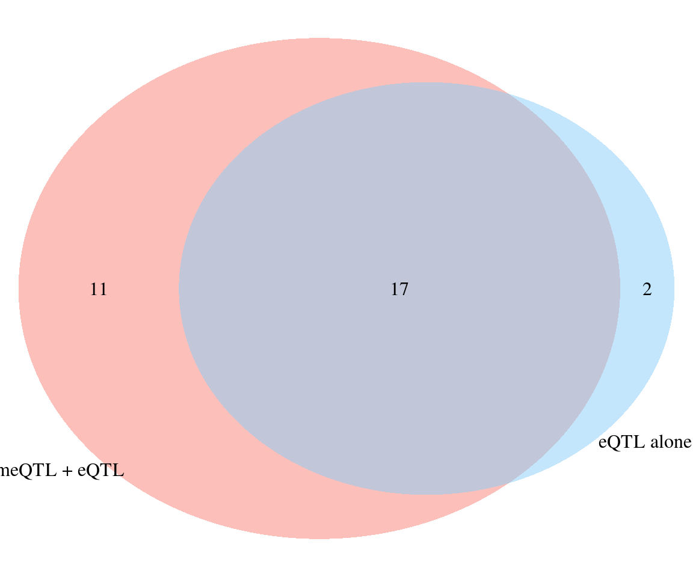
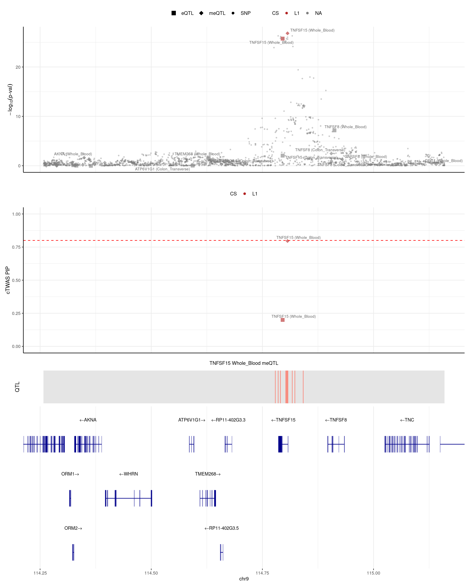

methylation_analysis
2024-10-22
Last updated: 2024-11-25
Checks: 6 1
Knit directory: multigroup_ctwas_analysis/
This reproducible R Markdown analysis was created with workflowr (version 1.7.0). The Checks tab describes the reproducibility checks that were applied when the results were created. The Past versions tab lists the development history.
The R Markdown file has unstaged changes. To know which version of the R Markdown file created these results, you’ll want to first commit it to the Git repo. If you’re still working on the analysis, you can ignore this warning. When you’re finished, you can run wflow_publish to commit the R Markdown file and build the HTML.
Great job! The global environment was empty. Objects defined in the global environment can affect the analysis in your R Markdown file in unknown ways. For reproduciblity it’s best to always run the code in an empty environment.
The command set.seed(20231112) was run prior to running the code in the R Markdown file. Setting a seed ensures that any results that rely on randomness, e.g. subsampling or permutations, are reproducible.
Great job! Recording the operating system, R version, and package versions is critical for reproducibility.
Nice! There were no cached chunks for this analysis, so you can be confident that you successfully produced the results during this run.
Great job! Using relative paths to the files within your workflowr project makes it easier to run your code on other machines.
Great! You are using Git for version control. Tracking code development and connecting the code version to the results is critical for reproducibility.
The results in this page were generated with repository version cacd12a. See the Past versions tab to see a history of the changes made to the R Markdown and HTML files.
Note that you need to be careful to ensure that all relevant files for the analysis have been committed to Git prior to generating the results (you can use wflow_publish or wflow_git_commit). workflowr only checks the R Markdown file, but you know if there are other scripts or data files that it depends on. Below is the status of the Git repository when the results were generated:
Unstaged changes:
Modified: analysis/methylation_analysis.Rmd
Note that any generated files, e.g. HTML, png, CSS, etc., are not included in this status report because it is ok for generated content to have uncommitted changes.
These are the previous versions of the repository in which changes were made to the R Markdown (analysis/methylation_analysis.Rmd) and HTML (docs/methylation_analysis.html) files. If you’ve configured a remote Git repository (see ?wflow_git_remote), click on the hyperlinks in the table below to view the files as they were in that past version.
| File | Version | Author | Date | Message |
|---|---|---|---|---|
| Rmd | cacd12a | sq-96 | 2024-11-24 | update |
| html | cacd12a | sq-96 | 2024-11-24 | update |
| Rmd | a901ca7 | sq-96 | 2024-11-21 | update |
| Rmd | 770965a | sq-96 | 2024-10-25 | update |
| Rmd | c3e7a9f | sq-96 | 2024-10-25 | update |
| html | c3e7a9f | sq-96 | 2024-10-25 | update |
| Rmd | 2db1bdc | sq-96 | 2024-10-23 | update |
| html | 2db1bdc | sq-96 | 2024-10-23 | update |
| Rmd | f8b659f | sq-96 | 2024-10-23 | update |
| html | f8b659f | sq-96 | 2024-10-23 | update |
| Rmd | b3ff842 | sq-96 | 2024-10-23 | update |
| html | b3ff842 | sq-96 | 2024-10-23 | update |
| Rmd | 919465c | sq-96 | 2024-10-23 | update |
| html | 919465c | sq-96 | 2024-10-23 | update |
Fusion Lasso model of DNA methylation
I built lasso model of DNA methylation with FUSION for Whole Blood and Colon Transverse. Similar to meQTL mapping, for each CpG site, I extracted surrounding 50kb genptypes and train lasso models with cross validation. With heritability cutoff p<0.0001, I have about 16,000 and 48,000 CpG sites in whole blood and colon transverse. Among which, 5,000 and 40,000 CpG sites are also in QTL mapping. Colon have more overlaps than whole blood. The average cross-validation R2 for lasso in whole blood and colon transverse are 0.393 and 0.248 In the single QTL approach (qval < 0.001), we have 7,720 and 91,466 CpG sites.

IBD results
cTWAS parameters (50kb, h2 pvalue<0.00001)
meQTLs explained 10% heritability
cTWAS with eQTLs and meQTLs identifies 28 genes with PIP > 0.8
Top cTWAS genes from single group models have very little overlap

Adding eQTL to meQTL identifies an additional 16 high PIP genes
- 12/17 meQTL genes still have combined PIP > 0.8 after adding eQTL
- 3/17 meQTL genes have decreased combined PIP < 0.8 after adding eQTL
- 2/17 meQTL genes are lost, due to region selection after adding eQTL
- Among the 12 overalpped genes:
One gene (BRD7) is mediation (meQTL pip decreases from 0.96 to 0.09, eQTL pip=0.90).
Two genes (TNFSF15 and ATG16L1) are competition (eQTL pip = 0.2 and meQTL pip is decreased by 0.2).
Nine genes are meQTL alone (no eQTL pip).
Adding meQTL to eQTL identifies an additional 11 high PIP genes

| Version | Author | Date |
|---|---|---|
| cacd12a | sq-96 | 2024-11-24 |
Genes that identified by meQTL not eQTL
finemap_res_multi[!is.na(finemap_res_multi$gene_name) & finemap_res_multi$gene_name == "ETS1", ] id molecular_id type
8377 ENSG00000134954.14|Colon_Transverse_eQTL ENSG00000134954.14 eQTL
8392 cg04583498|Whole_Blood_meQTL cg04583498 meQTL
8419 cg27625507|Colon_Transverse_meQTL cg27625507 meQTL
8423 cg13448797|Colon_Transverse_meQTL cg13448797 meQTL
context group region_id z
8377 Colon_Transverse Colon_Transverse|eQTL 11_128318642_130472680 1.123077
8392 Whole_Blood Whole_Blood|meQTL 11_128318642_130472680 -5.401685
8419 Colon_Transverse Colon_Transverse|meQTL 11_128318642_130472680 1.140970
8423 Colon_Transverse Colon_Transverse|meQTL 11_128318642_130472680 -2.524429
susie_pip mu2 cs gene_name gene_type chrom start
8377 3.765461e-06 1.967371 <NA> ETS1 protein_coding 11 128458761
8392 8.471599e-01 25.715822 L1 ETS1 protein_coding 11 128556018
8419 7.231902e-07 2.028024 <NA> ETS1 protein_coding 11 128583165
8423 7.486851e-06 6.337017 <NA> ETS1 protein_coding 11 128512888
end pos
8377 128587558 128523160
8392 128556020 128556019
8419 128583167 128583166
8423 128512890 128512889#pdf(file = "/project/xinhe/shengqian/TNFSF15.pdf",width = 12,height = 10)#
make_locusplot(finemap_res_multi,
region_id = "9_114257521_115159681",
ens_db = ens_db,
weights = weights_multi,
highlight_pip = 0.8,
filter_protein_coding_genes = TRUE,
filter_cs = TRUE,
color_pval_by = "cs",
color_pip_by = "cs",
point.sizes = c(2, 8),
label.text.size = 4,
axis.text.size = 18,
axis.title.size = 18,
legend.text.size = 18,
panel.heights = c(4, 4, 0.8, 2))2024-11-25 11:54:32 INFO::Limit to protein coding genes
2024-11-25 11:54:32 INFO::focal id: cg06629146|Whole_Blood_meQTL
2024-11-25 11:54:32 INFO::focal molecular trait: TNFSF15 Whole_Blood meQTL
2024-11-25 11:54:32 INFO::Range of locus: chr9:114257421-115159692chromosome 9, position 114257421 to 1151596922376 SNPs/datapoints2024-11-25 11:54:35 INFO::focal molecular trait QTL positions: 114779085,114785492,114790605,114802595,114804160,114804843,114806486,114806680,114806766,114807377,114817177,114823090,114841815
2024-11-25 11:54:35 INFO::Limit PIPs to credible setsWarning: ggrepel: 24 unlabeled data points (too many overlaps). Consider
increasing max.overlapsWarning: ggrepel: 13 unlabeled data points (too many overlaps). Consider
increasing max.overlaps
sessionInfo()R version 4.2.0 (2022-04-22)
Platform: x86_64-pc-linux-gnu (64-bit)
Running under: CentOS Linux 7 (Core)
Matrix products: default
BLAS/LAPACK: /software/openblas-0.3.13-el7-x86_64/lib/libopenblas_haswellp-r0.3.13.so
locale:
[1] LC_CTYPE=en_US.UTF-8 LC_NUMERIC=C
[3] LC_TIME=en_US.UTF-8 LC_COLLATE=en_US.UTF-8
[5] LC_MONETARY=en_US.UTF-8 LC_MESSAGES=en_US.UTF-8
[7] LC_PAPER=en_US.UTF-8 LC_NAME=C
[9] LC_ADDRESS=C LC_TELEPHONE=C
[11] LC_MEASUREMENT=en_US.UTF-8 LC_IDENTIFICATION=C
attached base packages:
[1] stats4 grid stats graphics grDevices utils datasets
[8] methods base
other attached packages:
[1] EnsDb.Hsapiens.v86_2.99.0 ensembldb_2.22.0
[3] AnnotationFilter_1.22.0 GenomicFeatures_1.50.4
[5] AnnotationDbi_1.60.2 Biobase_2.58.0
[7] GenomicRanges_1.50.2 GenomeInfoDb_1.34.9
[9] IRanges_2.32.0 S4Vectors_0.36.2
[11] BiocGenerics_0.44.0 VennDiagram_1.7.3
[13] futile.logger_1.4.3 RColorBrewer_1.1-3
[15] pheatmap_1.0.12 magrittr_2.0.3
[17] RSQLite_2.3.7 lubridate_1.9.3
[19] forcats_1.0.0 stringr_1.5.1
[21] dplyr_1.1.4 purrr_1.0.2
[23] readr_2.1.5 tidyr_1.3.1
[25] tibble_3.2.1 tidyverse_2.0.0
[27] ctwas_0.4.15 data.table_1.16.0
[29] gridExtra_2.3 ggVennDiagram_1.5.2
[31] ggplot2_3.5.1 workflowr_1.7.0
loaded via a namespace (and not attached):
[1] BiocFileCache_2.6.1 lazyeval_0.2.2
[3] crosstalk_1.2.1 BiocParallel_1.32.6
[5] LDlinkR_1.4.0 digest_0.6.37
[7] yulab.utils_0.1.7 htmltools_0.5.8.1
[9] fansi_1.0.6 memoise_2.0.1
[11] tzdb_0.4.0 Biostrings_2.66.0
[13] matrixStats_1.4.1 locuszoomr_0.3.5
[15] timechange_0.3.0 prettyunits_1.2.0
[17] colorspace_2.1-1 blob_1.2.4
[19] rappdirs_0.3.3 ggrepel_0.9.6
[21] xfun_0.47 callr_3.7.2
[23] crayon_1.5.3 RCurl_1.98-1.16
[25] jsonlite_1.8.9 zoo_1.8-12
[27] glue_1.7.0 gtable_0.3.5
[29] zlibbioc_1.44.0 XVector_0.38.0
[31] DelayedArray_0.24.0 scales_1.3.0
[33] futile.options_1.0.1 DBI_1.2.3
[35] Rcpp_1.0.13 viridisLite_0.4.2
[37] progress_1.2.3 gridGraphics_0.5-1
[39] bit_4.5.0 DT_0.22
[41] htmlwidgets_1.6.4 httr_1.4.7
[43] pkgconfig_2.0.3 XML_3.99-0.14
[45] farver_2.1.2 sass_0.4.9
[47] dbplyr_2.5.0 utf8_1.2.4
[49] ggplotify_0.1.2 tidyselect_1.2.1
[51] labeling_0.4.3 rlang_1.1.4
[53] later_1.3.2 munsell_0.5.1
[55] pgenlibr_0.3.7 tools_4.2.0
[57] cachem_1.1.0 cli_3.6.3
[59] generics_0.1.3 evaluate_1.0.0
[61] fastmap_1.2.0 yaml_2.3.10
[63] processx_3.7.0 knitr_1.48
[65] bit64_4.5.2 fs_1.6.4
[67] KEGGREST_1.38.0 whisker_0.4
[69] formatR_1.14 aplot_0.2.3
[71] xml2_1.3.3 biomaRt_2.54.1
[73] compiler_4.2.0 rstudioapi_0.14
[75] plotly_4.10.4 filelock_1.0.3
[77] curl_5.2.3 png_0.1-7
[79] bslib_0.8.0 stringi_1.8.4
[81] highr_0.11 ps_1.7.1
[83] lattice_0.20-45 ProtGenerics_1.30.0
[85] Matrix_1.5-3 vctrs_0.6.5
[87] pillar_1.9.0 lifecycle_1.0.4
[89] jquerylib_0.1.4 cowplot_1.1.3
[91] bitops_1.0-8 irlba_2.3.5.1
[93] httpuv_1.6.5 patchwork_1.3.0
[95] rtracklayer_1.58.0 R6_2.5.1
[97] BiocIO_1.8.0 promises_1.3.0
[99] codetools_0.2-18 lambda.r_1.2.4
[101] SummarizedExperiment_1.28.0 rprojroot_2.0.3
[103] rjson_0.2.23 withr_3.0.1
[105] GenomicAlignments_1.34.1 Rsamtools_2.14.0
[107] GenomeInfoDbData_1.2.9 parallel_4.2.0
[109] hms_1.1.3 ggfun_0.1.6
[111] gggrid_0.2-0 rmarkdown_2.28
[113] MatrixGenerics_1.10.0 logging_0.10-108
[115] git2r_0.30.1 mixsqp_0.3-54
[117] getPass_0.2-2 restfulr_0.0.15